IOM Example - SteelFrame
This example describes how to define a steel frame in IOM (IDEA StatiCa Open Model). The source code of this example is in the project IOM.GeneratorExample
The generated IOM can be used for creating IDEA StatiCa Connection project (ideacon). It can be done on a desktop PC where IDEA StatiCa is installed. More details how to do are in the project IOM.SteelFrameDesktop. It requires the installation of IdeaStatiCa on PC.
Idea Connection project can be also generated from IOM by the webservice which runs in IDEA Cloud. More details are in the project IOM.SteelFrameWeb
Creating IOM for steel frame step by step
Let's create a standard console application in MS Visual Studio. Select File > New > Project from the menu bar. In the dialog, select the Visual C# node followed by the Get Started node. Then select the Console App project template.
Add the IdeaRS.OpenModel NuGet package
OpenModel is published as the nuget package. To install this package, you can use either the Package Manager UI or the Package Manager Console.
For more information, see Install and use a package in Visual Studio
There is also full documentation related to IdeaRS.OpenModel.
The geometry of the steel frame
The geometrical model of the steel structure which you can see in the picture below will be created in this step. The model consists of several columns and beams.
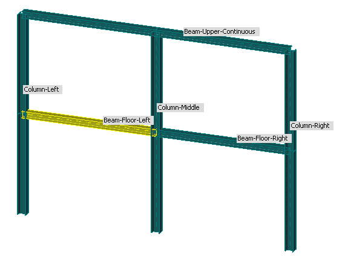
The project settings
A basic information about our project - such as a project name, a description etc.
// create new instance of the open model
model.OriginSettings = new OriginSettings();
model.OriginSettings.CrossSectionConversionTable = CrossSectionConversionTable.SCIA;
model.OriginSettings.CountryCode = CountryCode.ECEN;
model.OriginSettings.ProjectName = "Project";
model.OriginSettings.Author = "IDEA StatiCa s.r.o.";
model.OriginSettings.ProjectDescription = "Training example";
More datails can be found here OriginSettings.
Definition of materials in our model
*The type of materials corresponds to the selected design code for our project ! We can't mixed Reference to the materials in open model is IdeaRS.OpenModel.Material
MatSteelEc2 material = new MatSteelEc2();
// set properties
material.Id = 1;
material.Name = "S355";
material.E = 210000000000;
material.G = material.E / (2 * (1 + 0.3));
material.Poisson = 0.3;
material.UnitMass = 7850;
material.SpecificHeat = 0.6;
material.ThermalExpansion = 0.000012;
material.ThermalConductivity = 45;
material.IsDefaultMaterial = false;
material.OrderInCode = 0;
material.StateOfThermalExpansion = ThermalExpansionState.Code;
material.StateOfThermalConductivity = ThermalConductivityState.Code;
material.StateOfThermalSpecificHeat = ThermalSpecificHeatState.Code;
material.StateOfThermalStressStrain = ThermalStressStrainState.Code;
material.StateOfThermalStrain = ThermalStrainState.Code;
material.fy = 355000000;
material.fu = 510000000;
material.fy40 = 335000000;
material.fu40 = 470000000;
material.DiagramType = SteelDiagramType.Bilinear;
// add material to the model
model.AddObject(material);
Definition of cross sections in our model
Reference to the cross sections in open model is IdeaRS.OpenModel.CrossSection.
Model has two types of cross sections: HE200B and HE240B. To create a single cross-section you need to know the material from previous section.
// only one material is in the model
MatSteel material = model.MatSteel.FirstOrDefault();
CrossSectionParameter css = new CrossSectionParameter();
css.Id = 1;
css.Name = "HE200B";
css.CrossSectionRotation = 0;
css.CrossSectionType = CrossSectionType.RolledI;
css.Parameters.Add(new ParameterString() { Name = "UniqueName", Value = "HE200B" });
css.Material = new ReferenceElement(material);
// add cross sections to the model
model.AddObject(css);
Nodes in the geometrical model
Individual nodes are placed in the structure as follows:

Table of all nodes with given coordinates:
| Node | X | Y | Z |
|---|---|---|---|
| N1 | -2 | 3 | 0 |
| N2 | -2 | 3 | 3 |
| N3 | 2 | 3 | 0 |
| N4 | 2 | 3 | 3 |
| N5 | 6 | 3 | 0 |
| N6 | 6 | 3 | 3 |
| N7 | -2 | 3 | 6 |
| N8 | 2 | 3 | 6 |
| N9 | 6 | 3 | 6 |
Create 3D point and fill properties: id, name and coordinates.
// create N1
Point3D N1 = new Point3D() { X = -2, Y = 3, Z = 0 };
N1.Name = "N1";
N1.Id = 1;
model.AddObject(N1);
// create N2
Point3D N2 = new Point3D() { X = -2, Y = 3, Z = 3 };
N2.Name = "N2";
N2.Id = 2;
model.AddObject(N2);
// and so on...
1D members in our model
Each instace of Member1D has one ore more instances Element1D.
1. The example of an instance of Member1D which has only one Element1D and it is connected as an ended member into a connection.

The code below describes how to create a member which has only one Element1D
Please notice, for better readability there are also helper functions like CreateLineSegment3D, CreateElement1D and CreateMember1D that you can find here.
// set the appropriate cross section
var css_he_200b = model.CrossSection.FirstOrDefault(item => item.Name == "HE200B");
// define the geometry of the member - the line segment connecting nodes N2 and N4
LineSegment3D segment = CreateLineSegment3D(model, "N2", "N4");
// create the polyline (polylines can consist of one ore more segments)
PolyLine3D polyline = new PolyLine3D();
polyline.Id = model.GetMaxId(polyline) + 1;
polyline.Segments.Add(new ReferenceElement(segment));
// add polylines and segments to the model
model.AddObject(polyline);
model.AddObject(segment);
// create one 1D element
Element1D element = CreateElement1D(model, css, segment);
model.AddObject(element);
// create one 1D member which has one element1D
Member1D member = CreateMember1D(model, 1, Member1DType.Beam, element);
model.Member1D.Add(member);
// create the instance of a ConnectedMember - it defines the geometrical bahaviour of our Member1D in a connection. It can be ended or continouous.
// Member1D can be part of more connections
ConnectedMember M1 = new ConnectedMember();
M1.Id = 1;
M1.MemberId = new ReferenceElement(member);
model.AddObject(M1);
2. The example of an instance of Member1D which has two Element1Ds - it can be connected as an continuous member into a connection (by its middle node).
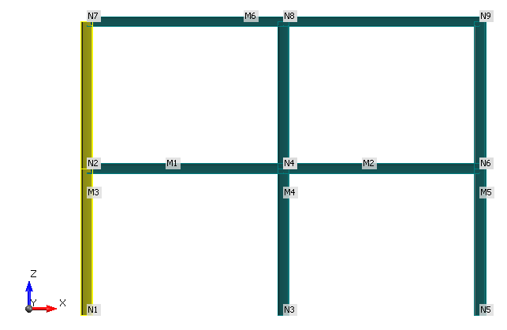
The code below describes the creation of second member - which connects 3 nodes the begin node (N1), the middle node (N2) and the end node (N7).
// set its cross sections
var css_he_240b = model.CrossSection.FirstOrDefault(item => item.Name == "HE240B");
// define geometry
// create line segment from N1 to N2
LineSegment3D segment1 = CreateLineSegment3D(model, "N1", "N2");
model.AddObject(segment1);
// create line segment from N2 to N7
LineSegment3D segment2 = CreateLineSegment3D(model, "N2", "N7");
model.AddObject(segment2);
// create the polyline
PolyLine3D polyline = new PolyLine3D();
polyline.Id = model.GetMaxId(polyline) + 1;
polyline.Segments.Add(new ReferenceElement(segment1));
polyline.Segments.Add(new ReferenceElement(segment2));
model.AddObject(polyline);
// create 1D elements
Element1D element1 = CreateElement1D(model, css, segment1);
model.AddObject(element1);
Element1D element2 = CreateElement1D(model, css, segment2);
model.AddObject(element2);
// create 1D members
Member1D member = CreateMember1D(model, 2, Member1DType.Column, element1, element2);
model.Member1D.Add(member);
// create and return connected member
ConnectedMember M2 = new ConnectedMember();
M2.Id = id;
M2.MemberId = new ReferenceElement(member);
model.AddObject(M2);
The local coordinate system of members
It its important to pay attantion to the correct setting of coordinate systems of members. It must correspond to coordinate systems which are used in your FEA model otherwise it can caused unbalanced internal forces in exported connections.
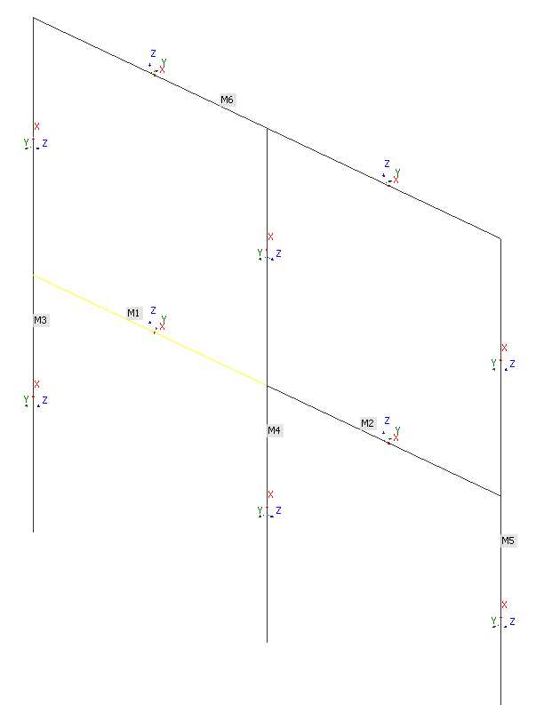
There are 3 options how to define the coordinate system for member 1d :
The coordinate system is a property of @"IdeaRS.OpenModel.Geometry3D.Segement3D"
LineSegment3D segment3D = new LineSegment3D();
segment3D.StartPoint = new ReferenceElement(model.Point3D.FirstOrDefault(item => item.Name == startNode));
CoordSystemByPoint system = new CoordSystemByPoint();
system.Point = new Point3D() { X = 100000, Y = 0, Z = 0 };
system.InPlane = Plane.ZX;
segment3D.LocalCoordinateSystem = system;
The loading of the steel frame
Load cases
// create the load group for pernament loadcases
LoadGroupEC LG1 = new LoadGroupEC(); ;
LG1.Id = 1;
LG1.Name = "PERM1";
LG1.Relation = Relation.Standard;
LG1.GroupType = LoadGroupType.Permanent;
LG1.GammaQ = 1.35;
LG1.Dzeta = 0.85;
LG1.GammaGInf = 1;
LG1.GammaGSup = 1.35;
model.AddObject(LG1);
// create the second load group for variable loadcases
LoadGroupEC LG2 = new LoadGroupEC(); ;
LG2.Id = 2;
LG2.Name = "VAR1";
LG2.Relation = Relation.Exclusive;
LG2.GroupType = LoadGroupType.Variable;
LG2.GammaQ = 1.5;
LG2.Dzeta = 0.85;
LG2.GammaGInf = 0;
LG2.GammaGSup = 1.5;
LG2.Psi0 = 0.7;
LG2.Psi1 = 0.5;
LG2.Psi2 = 0.3;
model.AddObject(LG2);
// create the first load case representing SelfWeight
LoadCase LC1 = new LoadCase();
LC1.Id = 1;
LC1.Name = "SelfWeight";
LC1.LoadType = LoadCaseType.Permanent;
LC1.Type = LoadCaseSubType.PermanentStandard;
LC1.Variable = VariableType.Standard;
LC1.LoadGroup = new ReferenceElement(LG1);
// create the second load case representing PernamentLoading
LoadCase LC2 = new LoadCase();
LC2.Id = 2;
LC2.Name = "PernamentLoading";
LC2.LoadType = LoadCaseType.Permanent;
LC2.Type = LoadCaseSubType.PermanentStandard;
LC2.Variable = VariableType.Standard;
LC2.LoadGroup = new ReferenceElement(LG1);
// create the third load case representing LiveLoad
LoadCase LC3 = new LoadCase();
LC3.Id = 3;
LC3.Name = "LiveLoad";
LC3.LoadType = LoadCaseType.Variable;
LC3.Type = LoadCaseSubType.VariableStatic;
LC3.Variable = VariableType.Standard;
LC3.LoadGroup = new ReferenceElement(LG2);
// add load cases to the model
model.AddObject(LC1);
model.AddObject(LC2);
model.AddObject(LC3);
Define Load Combinations
// create first combination input
CombiInputEC CI1 = new CombiInputEC();
CI1.Id = model.GetMaxId(CI1) + 1;
CI1.Name = "Co.#1";
CI1.Description = "SelfWeight + PernamentLoading + LiveLoad";
CI1.TypeCombiEC = TypeOfCombiEC.ULS;
CI1.TypeCalculationCombi = TypeCalculationCombiEC.Linear;
CombiItem item = new CombiItem();
item.Id = 1;
item.Coeff = 1;
item.LoadCase = new ReferenceElement(model.LoadCase.FirstOrDefault(l => l.Name == "SelfWeight"));
CI1.Items.Add(item);
item = new CombiItem();
item.Id = 2;
item.Coeff = 1;
item.LoadCase = new ReferenceElement(model.LoadCase.FirstOrDefault(l => l.Name == "PernamentLoading"));
CI1.Items.Add(item);
item = new CombiItem();
item.Id = 3;
item.Coeff = 1;
item.LoadCase = new ReferenceElement(model.LoadCase.FirstOrDefault(l => l.Name == "LiveLoad"));
CI1.Items.Add(item);
model.AddObject(CI1);
// and so on...
Connections
A connection is defined by its reference node and connected members. A member can be ended or continuous. From the design point of view the balance of loading in the node is required. Axis X of the local coordinate system of an ended member points out of a connection.
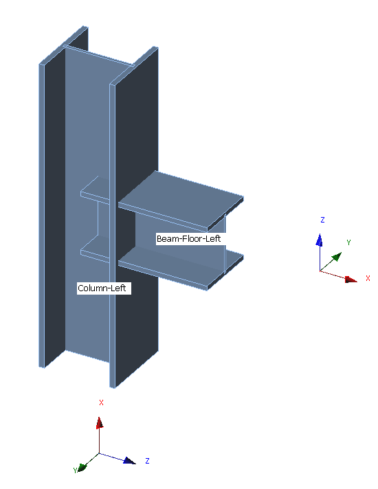
// create first connection point
ConnectionPoint CP1 = new ConnectionPoint();
CP1.Node = new ReferenceElement(model.Point3D.FirstOrDefault(n => n.Name == "N2"));
CP1.Id = model.GetMaxId(CP1) + 1;
CP1.Name = "CON " + CP1.Id.ToString();
// members from previous section
CP1.ConnectedMembers.Add(M1);
CP1.ConnectedMembers.Add(M3);
model.AddObject(CP1);
Loading impulses acting on mebers in a connection model
Loading impuses for our connection are determined from results of FE analysis. IDEA OpenModel allowes to pass internal forces on members by OpenResuls class.
Internal forces on members
Results of internal forces which were generated by a FEA application can be optionally saved as in the format of OpenModelResult. It contains internal forces on the Member1Ds. The relationships between the IOM and the IOM Results are defined by ID of objects.
The file (.xmlR) with results can be found here. Format is as follows:
<?xml version="1.0" encoding="utf-16"?>
<OpenModelResult xmlns:xsd="http://www.w3.org/2001/XMLSchema" xmlns:xsi="http://www.w3.org/2001/XMLSchema-instance">
<ResultOnMembers>
<ResultOnMembers>
<Members>
<ResultOnMember>
<Member>
<MemberType>Member1D</MemberType>
<Id>1</Id>
</Member>
<ResultType>InternalForces</ResultType>
<Results>
<ResultBase xsi:type="ResultOnSection">
<AbsoluteRelative>Absolute</AbsoluteRelative>
<Position>0</Position>
<Results>
<SectionResultBase xsi:type="ResultOfInternalForces">
<Loading>
<LoadingType>LoadCase</LoadingType>
<Id>1</Id>
<Items>
<ResultOfLoadingItem>
<Coefficient>1</Coefficient>
</ResultOfLoadingItem>
</Items>
</Loading>
<N>242.96484375</N>
<Qy>0</Qy>
<Qz>1176.9375</Qz>
<Mx>0</Mx>
<My>-727.5482177734375</My>
<Mz>0</Mz>
</SectionResultBase>
<SectionResultBase xsi:type="ResultOfInternalForces">
<Loading>
<LoadingType>LoadCase</LoadingType>
<Id>2</Id>
<Items>
<ResultOfLoadingItem>
<Coefficient>1</Coefficient>
</ResultOfLoadingItem>
</Items>
</Loading>
<N>20200.224609375</N>
<Qy>0</Qy>
<Qz>97851.2109375</Qz>
<Mx>0</Mx>
<My>-60488.7421875</My>
<Mz>0</Mz>
</SectionResultBase>
</Results>
</ResultBase>
<Results>
</ResultOnMember>
<Members>
<ResultOnMembers>
<ResultOnMembers>
</OpenModelResult>
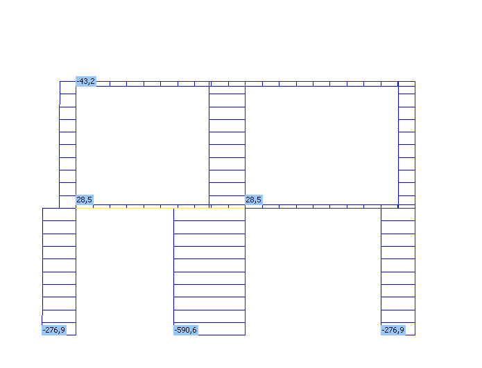
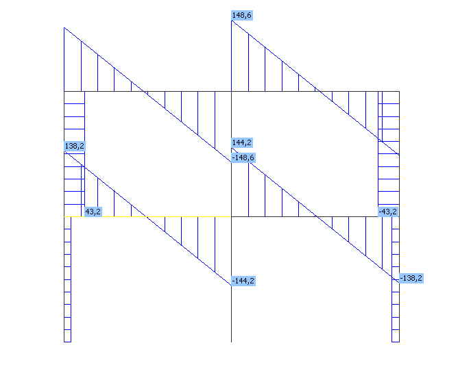
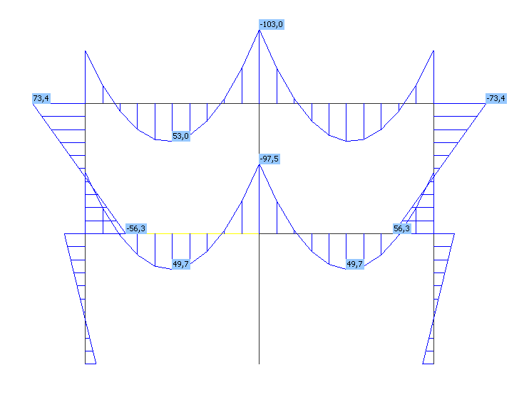
Validation of the exported connection
If everything is set correctly loads are in equilibrium.
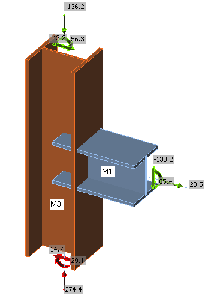
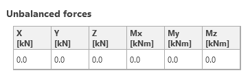
You can download idea project file of our steel frame which can be open in IDEA StatiCa Designer.
You can also download idea connection file of the created connection which can be open in IDEA StatiCa Connection.
Definition of a geometry of a connection
The geometry of a connection can be defined for each connection point in IOM. Following data about connected members, their cutting (shortening) and components of the connection (plates, welds, bolts) are required for creating a connection.
Additional connection data in the connection point:
IdeaRS.OpenModel.Connection.ConnectionPoint connection = new IdeaRS.OpenModel.Connection.ConnectionPoint();
IdeaRS.OpenModel.Geometry3D.Point3D point = new IdeaRS.OpenModel.Geometry3D.Point3D() {
X = -2,
Y = 3,
Z = 3
};
point.Id = openModel.GetMaxId(point) + 1;
point.Name = point.Id.ToString();
openModel.Point3D.Add(point);
//add connection to IOM
connection.Node = new ReferenceElement(point);
connection.Name = point.Name;
connection.Id = openModel.GetMaxId(connection) + 1;
openModel.Connections.Add(new IdeaRS.OpenModel.Connection.ConnectionData());
openModel.AddObject(connection);
Connected members
There can be one or more connected mebers in a connection. The information about behaviour and properties of a connected member are passed by the instances of the class BeamData.
Id- unique identificator [int]OriginalModelId- unique identificator from original model [string]IsAdded- beam is as stiffening member [bool]MirrorY- mirror the cross-section acccording to its XY plane [bool]RefLineInCenterOfGravity- the reference line of a cross-section is in center of gravity [bool]
The instance of ConnectedMember has the reference of its 1D model and defines how the member is connected.
Id- unique identificator [int]MemberId- reference to member1D represented beam ReferenceElementIsContinuous- a beam can be ended or continuous in a connection[bool]
The Example how to create a beam:
//
openModel.Connections[0].Beams = new List<IdeaRS.OpenModel.Connection.BeamData>();
//Add member1D 1
IdeaRS.OpenModel.Connection.BeamData beam1Data = new IdeaRS.OpenModel.Connection.BeamData
{
Id = 1,
OriginalModelId = "1",
IsAdded = false,
MirrorY = false,
RefLineInCenterOfGravity = false,
};
openModel.Connections[0].Beams.Add(beam1Data);
var member1 = openModel.Member1D.Find(x => x.Id == 1);
IdeaRS.OpenModel.Connection.ConnectedMember conMb = new IdeaRS.OpenModel.Connection.ConnectedMember
{
Id = member1.Id,
MemberId = new ReferenceElement(member1),
IsContinuous = false,
};
connection.ConnectedMembers.Add(conMb);
//Add member1D 3
var member3 = openModel.Member1D.Find(x => x.Id == 3);
IdeaRS.OpenModel.Connection.ConnectedMember conMb3 = new IdeaRS.OpenModel.Connection.ConnectedMember
{
Id = member3.Id,
MemberId = new ReferenceElement(member3),
IsContinuous = true,
};
connection.ConnectedMembers.Add(conMb3);
IdeaRS.OpenModel.Connection.BeamData beam2Data = new IdeaRS.OpenModel.Connection.BeamData
{
Id = 3,
OriginalModelId = "3",
IsAdded = false,
MirrorY = false,
RefLineInCenterOfGravity = false,
};
openModel.Connections[0].Beams.Add(beam2Data);
![alt text][Beam]
PlateData
PlateData includes data about geometry and material of the plate.
Name- name of plate [string]Id- unique identificator [int]OriginalModelId- unique identificator from original model [string]Material- name of already defined material in IOM [string]Thickness- thickness of plate defined in metric system(m) [double]Origin- point of local coordinate system defined in global coordinate system Point3DAxisXAxisYAxisZ- axixs of local coordinate system Vector3DRegion- geometry of plate descript by SVG path [string]
The example how to create a plate:
//add plate
IdeaRS.OpenModel.Connection.PlateData plateData = new IdeaRS.OpenModel.Connection.PlateData
{
Name = "P1",
Thickness = 0.02,
Id = 11,
Material = "S355",
OriginalModelId = "11",
Origin = new IdeaRS.OpenModel.Geometry3D.Point3D
{
X = -1.87,
Y = 2.88,
Z = 2.7
},
AxisX = new IdeaRS.OpenModel.Geometry3D.Vector3D
{
X = 0,
Y = 1,
Z = 0
},
AxisY = new IdeaRS.OpenModel.Geometry3D.Vector3D
{
X = 0,
Y = 0,
Z = 1
},
AxisZ = new IdeaRS.OpenModel.Geometry3D.Vector3D
{
X = 1,
Y = 0,
Z = 0
},
Region = "M 0 0 L 0.24 0 L 0.24 0.5 L 0 0.5 L 0 0",
};
(openModel.Connections[0].Plates ??
(openModel.Connections[0].Plates = new List<IdeaRS.OpenModel.Connection.PlateData>())).Add(plateData);
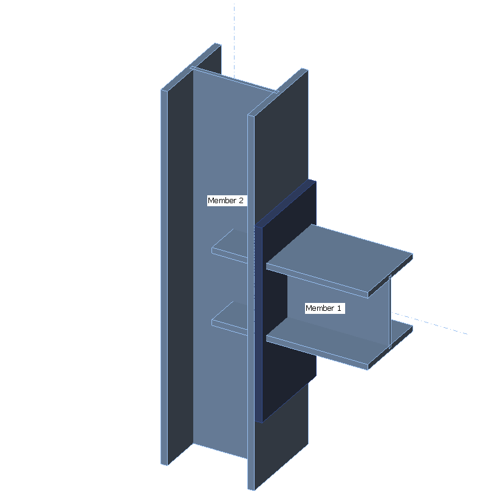
Cutting of connected members
Connected mebers can be cut by a plate, other member or a work plane
Cut member by other member or plate
By IdeaRS.OpenModel.Connection.CutBeamByBeamData you can define cutting beam by other beam or plate.
This object requires this values:
CuttingObject- reference of a member or plate which is cutting ReferenceElementModifiedObject- reference of the modified member ReferenceElementIsWeld- flags for welding cut [bool]
The example of cutting a beam by a plate:
// add cut
openModel.Connections[0].CutBeamByBeams = new List<IdeaRS.OpenModel.Connection.CutBeamByBeamData>
{
new IdeaRS.OpenModel.Connection.CutBeamByBeamData
{
CuttingObject = new ReferenceElement(plateData),
ModifiedObject = new ReferenceElement(beam1Data),
IsWeld = true,
}
};
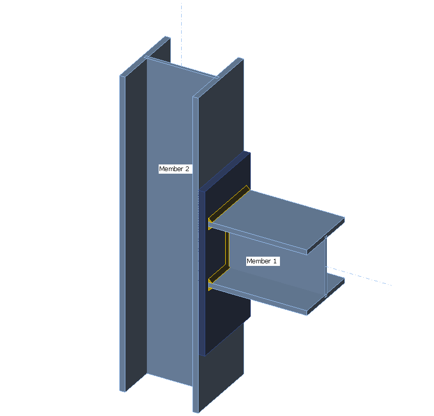
Cutting a member by a workplane
Members can be also cut by a workplane. This cut is defined by properties of an instance of the class By CutData This object requires this values:
PlanePoint- point on workplane in global coordinate system Point3DNormalVector- normal vector of workplane Vector3D
The example of cutting of a member by a workplane:
CutData cutData = new CutData(){
new IdeaRS.OpenModel.Geometry3D.Point3D() { X = 0, Y = 0, Z = 0 },
new IdeaRS.OpenModel.Geometry3D.Vector3D() { X = 1, Y = 0, Z = 0 },
}
(beam1Data.Cuts ?? (beam1Data.Cuts = new List<CutData>())).Add(cutData);
Bolt grids
BoltGrid includes properties of the bolt grid.
Id- unique identificator [int]Diameter- diameter of bolt(m) [double]DiagonalHeadDiameter- head diameter of bolt(m) [double]HeadHeight- height head of bolt(m) [double]BoreHole- hole for bolt(m) [double]TensileStressArea- tensile stress area(mm2) [double]NutThickness- nut thickness(m) [double]AnchorLen- lenght of bolt/anchor(m) [double]Material- name of already defined material in IOM [string]Standard- standard of bolt [string]Origin- point of local coordinate system defined in global coordinate systemAxisXAxisYAxisZ- axis of local coordinate system Vector3DPositions- list of bolt positions define by points in global coordinate system List<Point3D>ConnectedPartIds- list of identificators object which want to connect together [string]
The example of creating of a boltgrid:
IdeaRS.OpenModel.Connection.BoltGrid boltGrid = new IdeaRS.OpenModel.Connection.BoltGrid()
{
Id = 41,
ConnectedPartIds = new List<string>(),
Diameter = 0.016,
HeadDiameter = 0.024,
DiagonalHeadDiameter = 0.026,
HeadHeight = 0.01,
BoreHole = 0.018,
TensileStressArea = 157,
NutThickness = 0.013,
AnchorLen = 0.05,
Material = "8.8",
Standard = "M 16",
};
boltGrid.Origin = new IdeaRS.OpenModel.Geometry3D.Point3D() { X = plateData.Origin.X, Y = plateData.Origin.Y, Z = plateData.Origin.Z };
boltGrid.AxisX = new IdeaRS.OpenModel.Geometry3D.Vector3D() { X = plateData.AxisX.X, Y = plateData.AxisX.Y, Z = plateData.AxisX.Z };
boltGrid.AxisY = new IdeaRS.OpenModel.Geometry3D.Vector3D() { X = plateData.AxisY.X, Y = plateData.AxisY.Y, Z = plateData.AxisY.Z };
boltGrid.AxisZ = new IdeaRS.OpenModel.Geometry3D.Vector3D() { X = plateData.AxisZ.X, Y = plateData.AxisZ.Y, Z = plateData.AxisZ.Z };
boltGrid.Positions = new List<IdeaRS.OpenModel.Geometry3D.Point3D>
{
new IdeaRS.OpenModel.Geometry3D.Point3D()
{
X = -1.87,
Y = 2.92,
Z = 2.8
},
new IdeaRS.OpenModel.Geometry3D.Point3D()
{
X = -1.87,
Y = 3.08,
Z = 2.8
},
new IdeaRS.OpenModel.Geometry3D.Point3D()
{
X = -1.87,
Y = 2.92,
Z = 3.15
},
new IdeaRS.OpenModel.Geometry3D.Point3D()
{
X = -1.87,
Y = 3.08,
Z = 3.15
}
};
boltGrid.ConnectedPartIds = new List<string>() { beam2Data.OriginalModelId, plateData.OriginalModelId };
(openModel.Connections[0].BoltGrids ?? (openModel.Connections[0].BoltGrids = new List<IdeaRS.OpenModel.Connection.BoltGrid>())).Add(boltGrid);
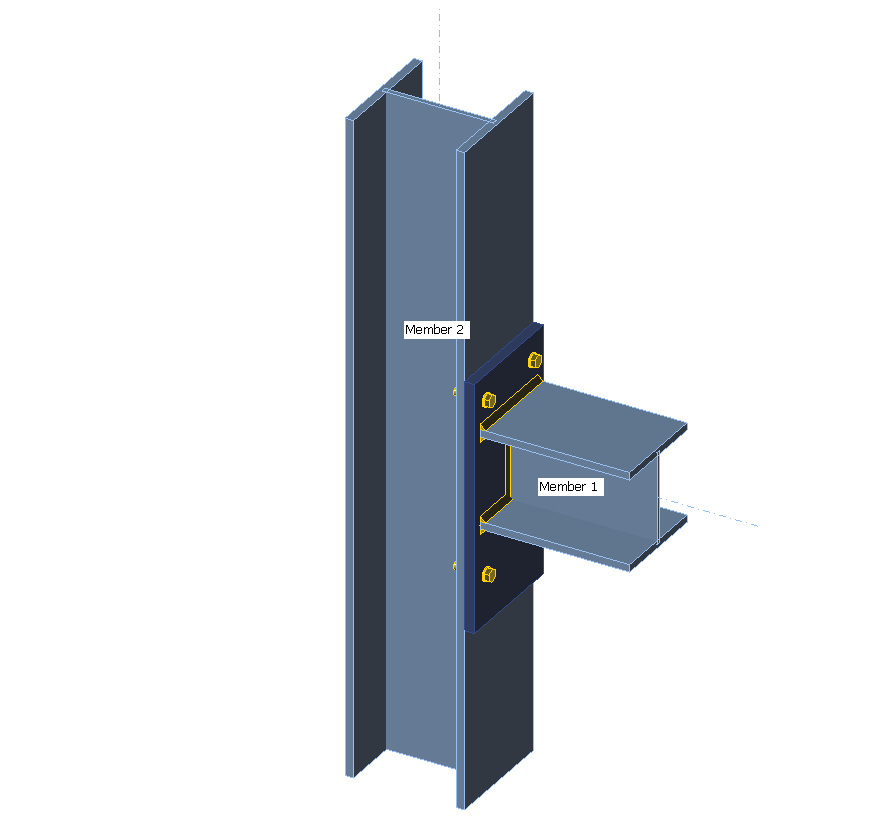
Welds
Weld
By WeldData you can define weld.
Id- unique identificator [int]ConnectedPartIds- list of identificators object which want to welded together [string]Start- point of start weld defined in global coordinate system Point3DEnd- point of end weld defined in global coordinate system Point3DThickness- thickness of weld defined in metric system(m) [double]WeldType- type of weld WeldType
The example of creating stiffeners with welds:
IdeaRS.OpenModel.Connection.PlateData plateData2 = new IdeaRS.OpenModel.Connection.PlateData
{
Name = "P2",
Thickness = 0.02,
Id = 12,
Material = "S355",
OriginalModelId = "12",
Origin = new IdeaRS.OpenModel.Geometry3D.Point3D
{
X = -2.103,
Y = 2.88,
Z = 2.75
},
AxisX = new IdeaRS.OpenModel.Geometry3D.Vector3D
{
X = 1,
Y = 0,
Z = 0
},
AxisY = new IdeaRS.OpenModel.Geometry3D.Vector3D
{
X = 0,
Y = 1,
Z = 0
},
AxisZ = new IdeaRS.OpenModel.Geometry3D.Vector3D
{
X = 0,
Y = 0,
Z = 1
},
Region = "M 0 0 L 0.206 0 L 0.206 0.105 L 0.195 0.115 L 0.011 0.115 L 0.0 0.105 L 0 0",
};
(openModel.Connections[0].Plates ?? (openModel.Connections[0].Plates = new List<IdeaRS.OpenModel.Connection.PlateData>())).Add(plateData2);
//add weld between memeber 2 and plate 2 - stiffener
IdeaRS.OpenModel.Connection.WeldData weldData = new IdeaRS.OpenModel.Connection.WeldData()
{
Id = 31,
ConnectedPartIds = new List<string>() { plateData2.OriginalModelId, beam2Data.OriginalModelId },
Start = new IdeaRS.OpenModel.Geometry3D.Point3D()
{
X = -2,
Y = 2.995,
Z = 2.76
},
End = new IdeaRS.OpenModel.Geometry3D.Point3D()
{
X = -2,
Y = 2.995,
Z = 2.76
},
Thickness = 0.004,
WeldType = IdeaRS.OpenModel.Connection.WeldType.DoubleFillet,
};
(openModel.Connections[0].Welds ?? (openModel.Connections[0].Welds = new List<IdeaRS.OpenModel.Connection.WeldData>())).Add(weldData);
//add weld3 between memeber 2 and plate 2 - stiffener
IdeaRS.OpenModel.Connection.WeldData weldData3 = new IdeaRS.OpenModel.Connection.WeldData()
{
Id = 33,
ConnectedPartIds = new List<string>() { plateData2.OriginalModelId, beam2Data.OriginalModelId },
Start = new IdeaRS.OpenModel.Geometry3D.Point3D()
{
X = -2.103,
Y = 2.90,
Z = 2.76
},
End = new IdeaRS.OpenModel.Geometry3D.Point3D()
{
X = -2.103,
Y = 2.90,
Z = 2.76
},
Thickness = 0.004,
WeldType = IdeaRS.OpenModel.Connection.WeldType.DoubleFillet,
};
openModel.Connections[0].Welds.Add(weldData3);
//add weld4 between memeber 2 and plate 2 - stiffener
IdeaRS.OpenModel.Connection.WeldData weldData4 = new IdeaRS.OpenModel.Connection.WeldData()
{
Id = 34,
ConnectedPartIds = new List<string>() { plateData2.OriginalModelId, beam2Data.OriginalModelId },
Start = new IdeaRS.OpenModel.Geometry3D.Point3D()
{
X = -1.897,
Y = 2.90,
Z = 2.76
},
End = new IdeaRS.OpenModel.Geometry3D.Point3D()
{
X = -1.897,
Y = 2.90,
Z = 2.76
},
Thickness = 0.004,
WeldType = IdeaRS.OpenModel.Connection.WeldType.DoubleFillet,
};
openModel.Connections[0].Welds.Add(weldData4);
//add plate 3
IdeaRS.OpenModel.Connection.PlateData plateData3 = new IdeaRS.OpenModel.Connection.PlateData
{
Name = "P3",
Thickness = 0.02,
Id = 13,
Material = "S355",
OriginalModelId = "13",
Origin = new IdeaRS.OpenModel.Geometry3D.Point3D
{
X = -2.103,
Y = 2.88,
Z = 3.1
},
AxisX = new IdeaRS.OpenModel.Geometry3D.Vector3D
{
X = 1,
Y = 0,
Z = 0
},
AxisY = new IdeaRS.OpenModel.Geometry3D.Vector3D
{
X = 0,
Y = 1,
Z = 0
},
AxisZ = new IdeaRS.OpenModel.Geometry3D.Vector3D
{
X = 0,
Y = 0,
Z = 1
},
Region = "M 0 0 L 0.206 0 L 0.206 0.105 L 0.195 0.115 L 0.011 0.115 L 0.0 0.105 L 0 0",
};
openModel.Connections[0].Plates.Add(plateData3);
//add weld between memeber 2 and plate 3 - stiffener
IdeaRS.OpenModel.Connection.WeldData weldData2 = new IdeaRS.OpenModel.Connection.WeldData()
{
Id = 32,
ConnectedPartIds = new List<string>() { plateData3.OriginalModelId, beam2Data.OriginalModelId },
Start = new IdeaRS.OpenModel.Geometry3D.Point3D()
{
X = -2,
Y = 2.995,
Z = 3.11
},
End = new IdeaRS.OpenModel.Geometry3D.Point3D()
{
X = -2,
Y = 2.995,
Z = 3.11
},
Thickness = 0.004,
WeldType = IdeaRS.OpenModel.Connection.WeldType.DoubleFillet,
};
openModel.Connections[0].Welds.Add(weldData2);
//add weld5 between memeber 2 and plate 3 - stiffener
IdeaRS.OpenModel.Connection.WeldData weldData5 = new IdeaRS.OpenModel.Connection.WeldData()
{
Id = 35,
ConnectedPartIds = new List<string>() { plateData3.OriginalModelId, beam2Data.OriginalModelId },
Start = new IdeaRS.OpenModel.Geometry3D.Point3D()
{
X = -2.103,
Y = 2.90,
Z = 3.11
},
End = new IdeaRS.OpenModel.Geometry3D.Point3D()
{
X = -2.103,
Y = 2.90,
Z = 3.11
},
Thickness = 0.004,
WeldType = IdeaRS.OpenModel.Connection.WeldType.DoubleFillet,
};
openModel.Connections[0].Welds.Add(weldData5);
//add weld6 between memeber 2 and plate 3 - stiffener
IdeaRS.OpenModel.Connection.WeldData weldData6 = new IdeaRS.OpenModel.Connection.WeldData()
{
Id = 36,
ConnectedPartIds = new List<string>() { plateData3.OriginalModelId, beam2Data.OriginalModelId },
Start = new IdeaRS.OpenModel.Geometry3D.Point3D()
{
X = -1.897,
Y = 2.90,
Z = 3.11
},
End = new IdeaRS.OpenModel.Geometry3D.Point3D()
{
X = -1.897,
Y = 2.90,
Z = 3.11
},
Thickness = 0.004,
WeldType = IdeaRS.OpenModel.Connection.WeldType.DoubleFillet,
};
openModel.Connections[0].Welds.Add(weldData6);
//add plate 4
IdeaRS.OpenModel.Connection.PlateData plateData4 = new IdeaRS.OpenModel.Connection.PlateData
{
Name = "P4",
Thickness = 0.02,
Id = 14,
Material = "S355",
OriginalModelId = "14",
Origin = new IdeaRS.OpenModel.Geometry3D.Point3D
{
X = -2.103,
Y = 3.12,
Z = 2.75
},
AxisX = new IdeaRS.OpenModel.Geometry3D.Vector3D
{
X = 1,
Y = 0,
Z = 0
},
AxisY = new IdeaRS.OpenModel.Geometry3D.Vector3D
{
X = 0,
Y = -1,
Z = 0
},
AxisZ = new IdeaRS.OpenModel.Geometry3D.Vector3D
{
X = 0,
Y = 0,
Z = 1
},
Region = "M 0 0 L 0.206 0 L 0.206 0.105 L 0.195 0.115 L 0.011 0.115 L 0.0 0.105 L 0 0",
};
openModel.Connections[0].Plates.Add(plateData4);
//add weld7 between memeber 2 and plate 4 - stiffener
IdeaRS.OpenModel.Connection.WeldData weldData7 = new IdeaRS.OpenModel.Connection.WeldData()
{
Id = 37,
ConnectedPartIds = new List<string>() { plateData4.OriginalModelId, beam2Data.OriginalModelId },
Start = new IdeaRS.OpenModel.Geometry3D.Point3D()
{
X = -2,
Y = 3.005,
Z = 2.76
},
End = new IdeaRS.OpenModel.Geometry3D.Point3D()
{
X = -2,
Y = 3.005,
Z = 2.76
},
Thickness = 0.004,
WeldType = IdeaRS.OpenModel.Connection.WeldType.DoubleFillet,
};
openModel.Connections[0].Welds.Add(weldData7);
//add weld8 between memeber 2 and plate 4 - stiffener
IdeaRS.OpenModel.Connection.WeldData weldData8 = new IdeaRS.OpenModel.Connection.WeldData()
{
Id = 38,
ConnectedPartIds = new List<string>() { plateData4.OriginalModelId, beam2Data.OriginalModelId },
Start = new IdeaRS.OpenModel.Geometry3D.Point3D()
{
X = -2.103,
Y = 3.1,
Z = 2.76
},
End = new IdeaRS.OpenModel.Geometry3D.Point3D()
{
X = -2.103,
Y = 3.1,
Z = 2.76
},
Thickness = 0.004,
WeldType = IdeaRS.OpenModel.Connection.WeldType.DoubleFillet,
};
openModel.Connections[0].Welds.Add(weldData8);
//add weld9 between memeber 2 and plate 4 - stiffener
IdeaRS.OpenModel.Connection.WeldData weldData9 = new IdeaRS.OpenModel.Connection.WeldData()
{
Id = 39,
ConnectedPartIds = new List<string>() { plateData4.OriginalModelId, beam2Data.OriginalModelId },
Start = new IdeaRS.OpenModel.Geometry3D.Point3D()
{
X = -1.897,
Y = 3.1,
Z = 2.76
},
End = new IdeaRS.OpenModel.Geometry3D.Point3D()
{
X = -1.897,
Y = 3.1,
Z = 2.76
},
Thickness = 0.004,
WeldType = IdeaRS.OpenModel.Connection.WeldType.DoubleFillet,
};
openModel.Connections[0].Welds.Add(weldData9);
//add plate 5
IdeaRS.OpenModel.Connection.PlateData plateData5 = new IdeaRS.OpenModel.Connection.PlateData
{
Name = "P5",
Thickness = 0.02,
Id = 15,
Material = "S355",
OriginalModelId = "15",
Origin = new IdeaRS.OpenModel.Geometry3D.Point3D
{
X = -2.103,
Y = 3.12,
Z = 3.1
},
AxisX = new IdeaRS.OpenModel.Geometry3D.Vector3D
{
X = 1,
Y = 0,
Z = 0
},
AxisY = new IdeaRS.OpenModel.Geometry3D.Vector3D
{
X = 0,
Y = -1,
Z = 0
},
AxisZ = new IdeaRS.OpenModel.Geometry3D.Vector3D
{
X = 0,
Y = 0,
Z = 1
},
Region = "M 0 0 L 0.206 0 L 0.206 0.105 L 0.195 0.115 L 0.011 0.115 L 0.0 0.105 L 0 0",
};
openModel.Connections[0].Plates.Add(plateData5);
//add weld10 between memeber 2 and plate 5 - stiffener
IdeaRS.OpenModel.Connection.WeldData weldData10 = new IdeaRS.OpenModel.Connection.WeldData()
{
Id = 40,
ConnectedPartIds = new List<string>() { plateData5.OriginalModelId, beam2Data.OriginalModelId },
Start = new IdeaRS.OpenModel.Geometry3D.Point3D()
{
X = -2,
Y = 3.005,
Z = 3.11
},
End = new IdeaRS.OpenModel.Geometry3D.Point3D()
{
X = -2,
Y = 3.005,
Z = 3.11
},
Thickness = 0.004,
WeldType = IdeaRS.OpenModel.Connection.WeldType.DoubleFillet,
};
openModel.Connections[0].Welds.Add(weldData10);
//add weld11 between memeber 2 and plate 5 - stiffener
IdeaRS.OpenModel.Connection.WeldData weldData11 = new IdeaRS.OpenModel.Connection.WeldData()
{
Id = 41,
ConnectedPartIds = new List<string>() { plateData5.OriginalModelId, beam2Data.OriginalModelId },
Start = new IdeaRS.OpenModel.Geometry3D.Point3D()
{
X = -2.103,
Y = 3.10,
Z = 3.11
},
End = new IdeaRS.OpenModel.Geometry3D.Point3D()
{
X = -2.103,
Y = 3.10,
Z = 3.11
},
Thickness = 0.004,
WeldType = IdeaRS.OpenModel.Connection.WeldType.DoubleFillet,
};
openModel.Connections[0].Welds.Add(weldData11);
//add weld12 between memeber 2 and plate 5 - stiffener
IdeaRS.OpenModel.Connection.WeldData weldData12 = new IdeaRS.OpenModel.Connection.WeldData()
{
Id = 46,
ConnectedPartIds = new List<string>() { plateData5.OriginalModelId, beam2Data.OriginalModelId },
Start = new IdeaRS.OpenModel.Geometry3D.Point3D()
{
X = -1.897,
Y = 3.10,
Z = 3.11
},
End = new IdeaRS.OpenModel.Geometry3D.Point3D()
{
X = -1.897,
Y = 3.10,
Z = 3.11
},
Thickness = 0.004,
WeldType = IdeaRS.OpenModel.Connection.WeldType.DoubleFillet,
};
openModel.Connections[0].Welds.Add(weldData12);
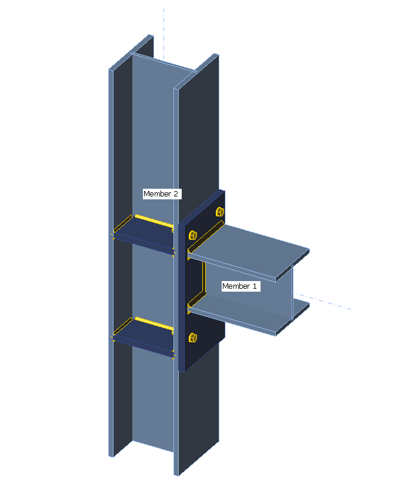
The IOM (.xml) is here.